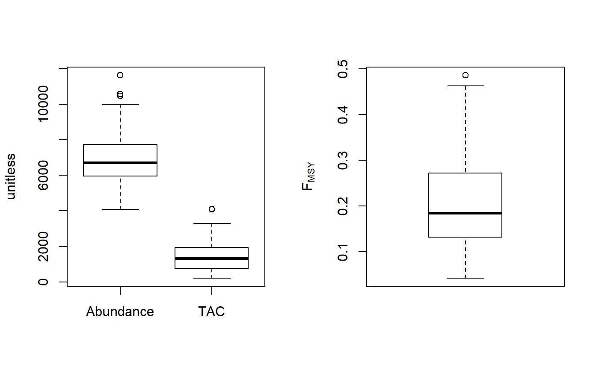
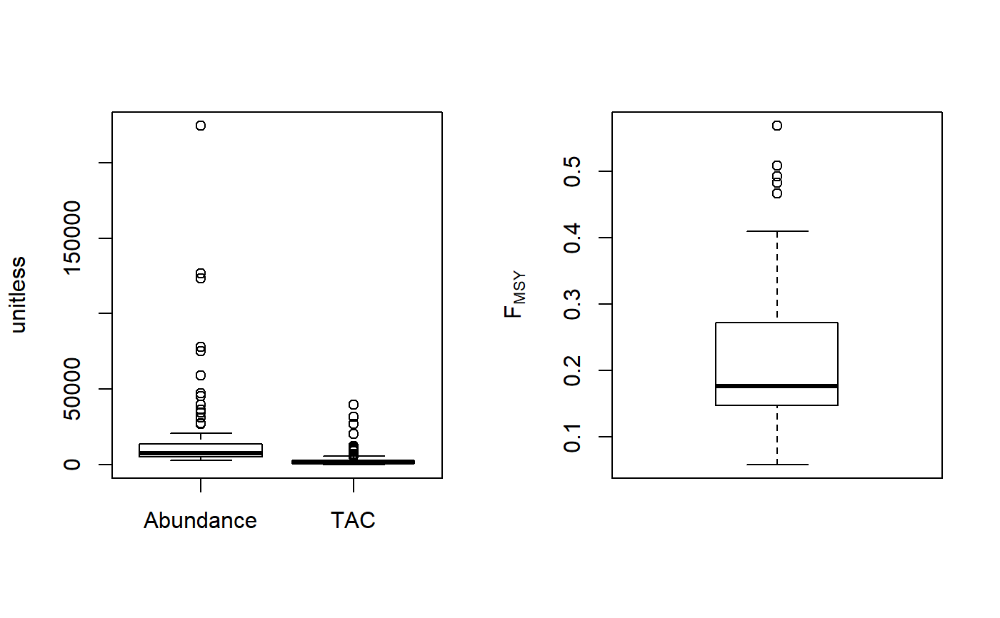

Demographic FMSY method
Fdem.RdFMSY is calculated as r/2 where r is calculated from a demographic approach (inc steepness). Coupled with an estimate of current abundance that gives you the OFL.
Fdem(x, Data, reps = 100, plot = FALSE) Fdem_CC(x, Data, reps = 100, plot = FALSE, Fmin = 0.005) Fdem_ML(x, Data, reps = 100, plot = FALSE, Fmin = 0.005)
Arguments
| x | A position in a data-limited methods data object |
|---|---|
| Data | A data-limited methods data object |
| reps | The number of stochastic samples of the MP recommendation(s) |
| plot | Logical. Show the plot? |
| Fmin | The minimum fishing mortality rate derived from the catch-curve analysis |
Value
An object of class Rec with the TAC slot populated with a numeric vector of length reps
Details
The TAC is calculated as: $$\textrm{TAC} = F_{\textrm{MSY}} A$$ where A is an estimate of current abundance, and \(F_{\textrm{MSY}}\) is estimated as \(r/2\), where \(r\) is the intrinsic rate of population growth, estimated from the life-history parameters using the methods of McAllister et al. (2001).
Functions
Fdem: Current abundance is assumed to be known (i.eData@Abun)Fdem_CC: Current abundance is estimated from catch curve analysisFdem_ML: Current abundance is estimated from mean length
Required Data
See Data for information on the Data object
Fdem: Abun, MaxAge, Mort, steep, t, vbK, vbLinf, vbt0, wla, wlb
Fdem_CC: CAA, Cat, MaxAge, Mort, steep, t, vbK, vbLinf, vbt0, wla, wlb
Rendered Equations
See Online Documentation for correctly rendered equations
References
McAllister, M.K., Pikitch, E.K., and Babcock, E.A. 2001. Using demographic methods to construct Bayesian priors for the intrinsic rate of increase in the Schaefer model and implications for stock rebuilding. Can. J. Fish. Aquat. Sci. 58: 1871-1890.
Examples
Fdem(1, DLMtool::SimulatedData, plot=TRUE)#> TAC (median) #> 16938.19Fdem_CC(1, DLMtool::SimulatedData, plot=TRUE)#> TAC (median) #> 1857.268Fdem_ML(1, DLMtool::SimulatedData, plot=TRUE)#> TAC (median) #> 835.1583